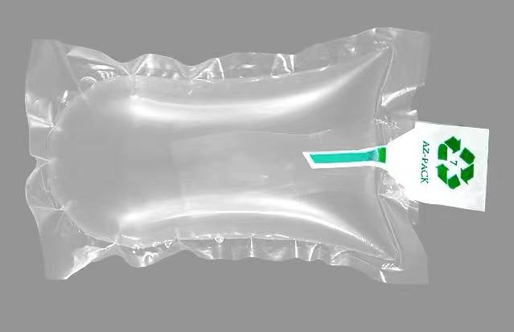

01-Introduce materials
1-1 Metal
Magnesium（mg）
1.1 Definition
Magnesium (chemical symbol Mg) is an alkaline earth metal with an atomic number of 12.
It is a silver-white light metal with high chemical reactivity. Magnesium mainly exists
in nature in the form of compounds, such as in minerals like magnesite, dolomite,
and sepiolite.
1.2 Properties
1-Low Density: Magnesium has a density of about 1.74 grams per cubic centimeter, making
it one of the lightest structural metals.
2-High Specific Strength: Although pure magnesium has a lower strength, magnesium alloys
have a very high specific strength, making them ideal for lightweight applications.

3-Good Electrical and Thermal Conductivity: Magnesium has moderate electrical and thermal
conductivity, suitable for electrical and heat exchange applications.
4-Good Damping Capacity: Magnesium has good damping properties, making it suitable for
applications requiring shock absorption.
5-Biodegradability: Magnesium alloys can biodegrade under certain conditions, giving them
potential applications in medical devices and implants.
1.3 Applications
Magnesium and its alloys are widely applied in the following areas:
1-Aerospace: Magnesium alloys are used in the construction of aircraft fuselages, engine
parts, and more due to their lightweight and high-strength properties.
Examples:
1. The hull of the spacecraft may require high strength and lightweight, so magnesium and
aluminum alloys with high aluminum content will be selected:
Magnesium aluminum alloy (Al-Mg) : In this alloy, the content of magnesium is usually 30%
to 45%, the content of aluminum is 10% to 25%, and the rest is other elements, such as
silicon, copper, iron, etc.
2. The internal structure of the spacecraft may require high strength and good thermal
conductivity, and magnesium copper alloys with higher copper content will be selected:
Magnesium copper alloy (Cu-Mg) : In this alloy, the content of magnesium is 50% to 65%, and
the content of copper is 10% to 25%.
2-Medical Devices: Magnesium alloys, due to their biocompatibility and degradability, are used
in the manufacture of certain medical devices and implants.
Principle of magnesium alloy in medical vascular stent:
1. Biocompatibility: Biocompatible magnesium alloys remain chemically stable within
the human body without triggering an immune response and are not absorbed by tissues.
2. Degradation Mechanism:When biocompatible magnesium alloys reach a certain age or
are subjected to specific stimuli (e.g., X-rays, heat), they undergo chemical reactions and
gradual decomposition into smaller molecules that can be digested by the human body.
3. Stability:Over time, biocompatible magnesium alloys lose hardness and become softer,
allowing them to dissolve readily through the circulation system and not cause tissue
compression.
4. Regeneration: Once absorbed, biocompatible magnesium alloys can regenerate through
the body's own renewal process, growing into new bones or tissues.

1.4 Advantages
1-Lightweight: The low density of magnesium helps to reduce the weight of transportation
vehicles and improve fuel economy.
2-High Strength: The strength of magnesium alloys allows them to replace traditional steel and
aluminum alloys in load-bearing structural components.
3-Cost-Effective: Magnesium is abundant, with relatively low extraction costs, which supports
large-scale production.
1.5 Limitations
1-Chemical Reactivity: Magnesium is prone to oxidation in air and requires protective coatings or
other anti-corrosion measures.
2-Machining Difficulty: Magnesium has poor machinability, especially at room temperature, and
requires special machining techniques.
3-Environmental Impact: Magnesium alloys may release harmful substances under specific conditions,
leading to environmental pollution.
1.6 Conclusion
In conclusion, magnesium is a lightweight metal with wide-ranging applications and potential.
However, its chemical reactivity and machining difficulty must be taken into account when using it.
As material science and processing technologies continue to advance, the application scope and
performance of magnesium are expected to expand.
1-2 Plastic
MC Nylon
2.1 Definition
MC Nylon, also known as Monomer Cast Nylon, is an engineering plastic formed by polymerizing
molten caprolactam monomer under normal pressure in a preheated mold using an alkaline
substance as a catalyst. It boasts excellent physical and mechanical properties, including
high strength, good rigidity, toughness, wear resistance, and chemical stability. MC Nylon
is self-extinguishing and has outstanding heat resistance, allowing for continuous use at
temperatures up to 100°C .
2.2 Properties
1-High Strength and Wear Resistance: MC Nylon can withstand long-term loads and offers exceptional
wear resistance and self-lubrication, performing well in oil-free or de-oiled lubrication applications.
2-Good Elasticity: MC Nylon can bend without deformation while retaining its toughness, resisting
repeated impacts.
3-Noise Reduction and Vibration Absorption: MC Nylon has a modulus much smaller than that of metal,
providing significant vibration attenuation, offering a practical way to prevent noise compared to metal.
4-Low Coefficient of Friction: The friction coefficient of MC Nylon is 8.8 times lower than steel and 8.3
times lower than copper, yet its specific gravity is only one-seventh that of copper.
5-High Chemical Stability: MC Nylon is resistant to alkalis, alcohols, ethers, hydrocarbons, weak acids,
lubricants, detergents, water (including sea water), and is characterized by being odorless, non-toxic,
tasteless, and rust-free.
2.3 Applications
1-Mechanical Industry: Used for manufacturing large products that are difficult to injection mold, such as
large gears, large valve seats, large worm wheels, and large bushings and bearings .
2-Automotive Manufacturing: Used in the production of automotive parts, including gears, bearings, impellers,
crankshafts, instrument panels, drive shafts, valves, blades, threaded rods, high-pressure gaskets, screws,
nuts, seals, etc..
3-Chemical Equipment: Used in the manufacture of chemical machinery, anticorrosive gear and parts billets,
wear-resistant parts, transmission structural parts, etc..
4-Electronics Industry: Used for manufacturing insulating sleeves, guide plates, pulleys, etc.
2.4 Advantages
1-Lightweight: MC Nylon's low density allows it to replace traditional metal materials, reducing structural
weight.
2-High Strength and Wear Resistance: MC Nylon's strength and wear resistance surpass many metal materials,
extending product lifespan.
3-Self-Lubricating: MC Nylon's good self-lubrication reduces maintenance costs and downtime.
4-Chemical Stability: MC Nylon's resistance to various chemicals makes it suitable for harsh environments.
2.5 Limitations
1-Temperature Limitation: While MC Nylon has good heat resistance, its operating temperature is still limited,
and prolonged exposure above 120°C may affect performance.
2-Chemical Sensitivity: MC Nylon is sensitive to certain strong acids and chemical reagents, which may damage
the material.
3-Processing Difficulty: Processing MC Nylon may require specialized techniques and equipment, increasing
production costs.
2.6 Conclusion
In summary, MC Nylon is a high-performance engineering plastic with broad application prospects. However, its
limitations must also be considered during use. With the development of material science and processing
technology, the application range and performance of MC Nylon are expected to further expand.
1-3 Composite materials
Cermet
3.1 Definition
Cermets are composite materials made from a combination of ceramic (cer) and metal (met) materials. They exhibit
a synergistic blend of properties from both constituents, such as the toughness and bendability of metals, along
with the high-temperature resistance, strength, and oxidation resistance of ceramics.
3.2 Properties
1-High Hardness and Strength: Cermets have high hardness and strength, making them suitable for environments
with heavy loads and high stress.
2-Excellent Wear Resistance: Cermets offer superior wear resistance, ideal for applications with severe abrasion.
3-High-Temperature Performance: Cermets maintain stable performance at elevated temperatures without deforming or
degrading.
4-Good Chemical Stability: Cermets resist most chemicals, making them less susceptible to corrosion.
5-Low Density: Cermets have a relatively low density, contributing to weight reduction in structures.
3.3 Applications
1-Aerospace: For manufacturing structural components of aircraft and missiles, engine pistons, and other critical
parts.
2-Automotive Industry: Used in the production of engine components, brake pads, and other wear-resistant parts.
3-Electronics: Employed in the manufacture of electrical contacts, circuit boards, and other components.
4-Chemical Machinery: Used to create corrosion-resistant pumps, valves, and other chemical equipment.
5-Cutting Tools: For producing cutting tools, abrasives, and other tooling applications.
3.4 Advantages
1-Lightweight: The low density of cermets contributes to reduced structural weight and improved energy
efficiency.
2-High Strength and Wear Resistance: The high strength and wear resistance of cermets ensure longer
service life in harsh conditions.
3-High-Temperature and Chemical Stability: Cermets can operate stably for extended periods in high-temperature
and corrosive environments, reducing maintenance costs.
3.5 Limitations
1-Limited Toughness: Cermets have lower toughness compared to metals, which may lead to cracking under
strong impact.
2-Poor Thermal Conductivity: Cermets have inferior thermal conductivity compared to metals, potentially
affecting their performance in high-speed rotation or high-temperature settings.
3-Difficulty in Machining: Cermets are typically more challenging to machine than metals, requiring
specialized processes and equipment.
3.6 Conclusion
In summary, cermets are materials with excellent comprehensive properties, finding extensive use across
various industrial sectors. However, their limitations in terms of toughness and thermal conductivity
must be considered during application. With ongoing advancements in materials science and processing
technology, the scope and performance of cermets are expected to further improve.
02-New materials
2-1 Liquid metal
2.1 Introduction:
Liquid metal refers to a kind of amorphous metal, liquid metal can be regarded as a mixture of positive ionic fluid
and free electron gas. Liquid metal is also an amorphous, liquid metal.
Liquid metal forming process and control, hydraulic characteristics of liquid metal filling process and flow
conditions Filling process has a great impact on the quality of castings may cause a variety of defects, such as
cold isolation, insufficient pouring, inclusion, porosity, sand, sand and other defects, are produced in the case
of unfavorable liquid metal filling. The correct design of the pouring system makes the liquid metal fill the
cavity smoothly and reasonably, which plays a very important role in ensuring the quality of the casting. Only
mercury is a liquid metal, while gallium, rubidium, and cesium are low-melting metals.
2.2 Features:
1-Viscous fluid flow: Liquid metals are viscous fluids. The viscosity of the liquid metal is related to its
composition, and increases with the decrease of the liquid metal temperature during the flow process. When crystals
appear in the liquid metal, the viscosity of the liquid increases sharply, and its flow rate and flow state will also
change sharply.
2-Unstable flow: In the filling process, the liquid metal temperature continues to decrease while the mold
temperature continues to increase, and the heat exchange between the two is unstable. With the decrease of flow
temperature, the viscosity increases and the flow resistance also increases. In addition, the pressure head of the
liquid flow increases or decreases during the filling process, and the flow velocity and flow state of the liquid
metal are also constantly changing, resulting in the unstable flow of the liquid metal during the filling mold
process.
3-Flow in porous pipe: Because the sand mold has certain pores, the pouring system and cavity in the sand mold can
be regarded as porous pipes and containers. When the liquid metal flows in the "porous tube", it is often not well
attached to the tube wall, which may involve the external gas in the liquid flow, forming pores or causing the
oxidation of the metal liquid to form oxidation slag.
4-Turbulent flow: Testing and calculation in production practice prove that when liquid metal flows in the pouring
system, its Reynolds number Re is greater than the critical Reynolds number Re, which belongs to turbulent flow.
For example, when ZL104 alloy is poured at 670℃ and the liquid flows at a speed of 50cm/s in a straight runner
with a diameter of 20mm, its Reynolds number is 25000, which is much higher than the critical Reynolds number of
2300. For the filling of some horizontally cast thin-wall castings or thick large castings, the liquid flow rises
slowly, and laminar flow may also be obtained. The study of the casting system of light alloy high-quality castings
shows that when Re < 20000, the oxide film on the surface of the flow will not be broken, and if the Reynolds
number is controlled at 4000 ~ 10000, it can meet the requirements of the production of aluminum alloy and
magnesium alloy high-quality castings. It has been proved by hydraulic simulation and real pouring test of aluminum
alloy castings that the maximum Reynolds number allowed should not exceed 10000 in the straight runner, 7000 in the
cross runner, 1100 in the inner runner, and 280 in the mold cavity. In summary, the main factors affecting the
stationarity of liquid metal flow are the flow velocity of liquid metal and the shape and cross-section size of the
pouring system.
2.3 Technology:
The paper "Multideformability of liquid metals between different conformations" reveals that liquid metals at room
temperature have a universal deformability that can be transformed between different forms and modes of motion. For
example, the liquid metal object immersed in water can show large-scale deformation, spin, directional motion under
the action of low voltage, and even the automatic fusion between liquid spheres, breaking-remerger and other
behaviors, and is not limited by the size of the liquid metal object; More unique is that a large liquid metal film
can shrink into a single liquid metal ball in a few seconds, the deformation process is very fast, and the surface
area can change up to thousands of times; In addition, under the action of external electric field, a large number of
metal liquid spheres separated from each other can adhere to each other and merge until they fuse into a single liquid
metal sphere. Based on electric field control, liquid metal can easily realize high-speed spin motion and induce vortex
pairs in the surrounding water in the same state of rapid rotation. If the electrode and the flow path are properly
adjusted, the movement mode of the liquid metal can also be transformed into a single rapid directional movement.
2.4 Achievements:
This research has opened up a range of practical applications, such as the manufacture of flexible actuators, the
control of directional movement of target fluids or sensors, the recovery of metal liquids, and the use of microfluidic
valves, pumps, or more artificial machines. If the electrode control of the space architecture is used, it is also
expected to expand the intelligent liquid metal unit to three dimensions to assemble a biological or humanoid machine
with special modeling and programmable capabilities; Even in the microgravity or non-gravity environment of outer space
exploration, corresponding machines can be developed to perform corresponding tasks.
2-2 Aerogel
2.1 Introduction:
Aerogel is a kind of nanoscale porous solid material formed by sol-gel method, which replaces the liquid phase in the gel
with gas in a certain drying way. Such as gelatin, gum Arabic, silicone, hair, nails and so on. Aerogel also has the
properties of gel, that is, it has the effect of expansion, thixotropic and dissociation.
Aerogel is the world's least dense solid and one of the top 10 emerging technologies in chemistry in 2022.
2.2 Features:
The density of this new material is only 3.55 kilograms per cubic meter, which is only 2.75 times the density of air;
The density of dried pine (500 kg per cubic meter) is 140 times higher. The substance looks like solidified smoke, but
its composition is similar to that of glass. Due to its extremely low density, it is very suitable for aerospace
applications.
Aerogel is sometimes referred to as "solid smoke" or "frozen smoke" because of its translucent color and ultra-light
weight. The new material may seem fragile, but it is actually very strong and can withstand temperatures of up to 1,400
degrees Celsius. These properties of aerogel have many applications in space exploration. Aerogel materials have been
used on the Russian Peace space station and the American Mars Pathfinder probe.
2.3 Product classification:
Aerogels can be divided into silicon series, carbon series, sulfur series, metal oxide series and metal series according
to the main components, and can also be divided into single component aerogels (such as silica aerogels, alumina aerogels,
etc.) and multi-component aerogels (silica/oxidized peptide aerogels, organic/inorganic composite aerogels, etc.). These
different types of aerogels have their own characteristics and are widely used in different fields.
2.4 Product structure:
Aerogel is a nanoporous network structure material. There are many experimental techniques used in the study of aerogel
structure. Transmission electron microscopy (TEM) and scanning electron microscopy (SEM) are used to observe the structure
characteristics such as particle shape and particle arrangement, and to estimate the pore or particle size quantitatively.
The specific surface, porosity and skeleton density were determined by adsorption-desorption method (including BET, specific
gravity meter and air porosity meter). Small Angle X-ray scattering (SAXS) or small Angle neutron scattering (SANS) are used
to measure the distribution and skeleton density of the colloidal particles (or network diameter) that make up the aerogel,
and some special properties of the aerogel structure (such as fractal structure, etc.) are obtained. Low frequency Raman
scattering can also be used to study the average particle size of aerogel network structure.
2.5 Research field:
1-In the "863" high-tech intense laser research: Nano-porous materials have important application value. For example, the use
of porous target materials with lower than critical density is expected to improve the beam quality of X-ray laser generated
by electron collision excitation and save driving energy. The use of new porous targets with micro-spherical node structure
can realize rapid cooling of three-dimensional adiabatic expansion of plasma and improve the gain coefficient of X-ray laser
generated by electron composite mechanism. By using ultra-low density material to adsorb nuclear fuel, the high gain freezing
target of laser inertial confinement fusion can be formed. Aerogels are the best candidate materials for the development of
new low density targets due to their slender nanoporous network structure, huge specific surface area and mesoscopic controllability.
2-As a thermal insulation material, the thin nanonetwork structure of silicon aerogel effectively limits the propagation of
local thermal excitation, and its solid thermal conductivity is 2-3 orders of magnitude lower than that of the corresponding
glassy material. Nano-pores inhibit the contribution of gas molecules to heat conduction. The refractive index of silicon
aerogel is close to l, and the ratio of annihilation coefficient to infrared and visible light is more than 100, which can
effectively pass through sunlight and prevent infrared thermal radiation of ambient temperature, and become an ideal transparent
thermal insulation material, which has been applied in solar energy utilization and building energy saving. By means of doping,
the radiative heat conduction of silicon aerogel can be further reduced, and the thermal conductivity of carbon-doped aerogel can
be as low as 0.013 w/m·K at normal temperature and pressure, which is the lowest solid material with thermal conductivity, and is
expected to replace polyurethane foam as a new type of refrigerator insulation material. The addition of titanium dioxide can make
silicon aerogel become a new high temperature insulation material, and the thermal conductivity at 800K is only 0.03w /m·K, which
will be further developed as a new material for military products.
3-In terms of energy storage devices: organic aerogels will be obtained after sintering process carbon aerogels This conductive
porous material is a new type of carbon material developed after fibrous activated carbon, it has a large specific surface area
(600-1000 m2/g) and high conductivity (10-25 s/cm). Moreover, the density varies over a wide range (0.05-1.0g /cm3). If the
appropriate electrolyte is filled in its micropores, a new type of rechargeable battery can be made, which has a large storage
capacity, small internal resistance, light weight, strong charging and discharging ability, can be reused many times and other
excellent characteristics, preliminary experimental results show that: carbon aerogel charging capacity of 3×104/kg2, power
density of 7 kw/kg, repeated charging and discharging performance is good.
03-Post processing for materials
3-1 Magnesium
1-Surface coating:
Magnesium alloy is susceptible to corrosion and oxidation, so surface coating is one of the common post-treatment methods.
The coating may be corrosion resistant or enhance wear resistance.

2-Anodizing:
This is a common surface treatment method for magnesium alloys, which can improve its corrosion resistance and surface hardness.
Anodized coatings can also provide additional protection, making magnesium alloys more suitable for use in harsh environments.

3-Grinding and polishing:
the surface quality of magnesium alloy can be improved by grinding and polishing, making it smoother and more uniform, and reducing
surface defects and roughness.

4-Heat treatment:
For specific magnesium alloys, heat treatment can improve their mechanical properties, including strength, hardness and corrosion
resistance.

3-2 MC nylon
1-Post-processing heat treatment:
nylon is a thermoplastic, after processing can be heat treated, by controlling the temperature and time to
adjust its performance, such as improving strength and wear resistance.

2-Surface coating:
The surface of nylon can be coated to improve its surface properties, such as increasing wear resistance
and chemical erosion resistance.

3-Reinforcement material filling:
By adding fillers (such as glass fiber, carbon fiber, etc.) to MC nylon, it can enhance its mechanical
properties and wear resistance.

Polishing:
Polishing nylon products can improve their appearance and surface quality.

3-3 Wood
1-Surface treatment:
The wood can be sanded or polished to make its surface smoother and reduce roughness and burrs.

2-Coating protection:
The surface of the wood can be coated to provide an additional layer of protection against moisture erosion,
insect damage and sun exposure.


3-Dyeing and coloring:
Dyeing and coloring can change the appearance of wood, making it more beautiful, and certain colorants also
have a protective effect.
4-Anti-corrosion treatment:
Anti-corrosion treatment of wood can extend its service life and make it more durable.

04-Materials in our project
4-1 Bear Materials
Polyester fiber
Polyester fiber is a synthetic fiber made from polyethylene terephthalate (PET), made by melt spinning or
solution spinning processes.
1-Features:
1. High strength, wear resistance (with high tensile strength)
2. Good chemical stability (with good resistance to acid and alkali)
3. Light resistance (strong resistance to sunlight and ultraviolet rays, not easy to decline in performance)
4. Fast drying (water evaporation speed is fast)Use in the project:
2-Use in the project:
Polyester fiber, as the main material of this bear doll, gives it a soft and comfortable touch, but also shows
excellent performance in terms of durability. This high-quality synthetic fiber, after a fine textile process,
forms the doll's delicate and elastic outer fabric. Whether it is hugging or everyday friction, polyester retains
its original shape and texture and is not easily deformed or broken.
In addition, the internal filling of polyester fiber is also made of this material. Soft and environmentally
friendly not only increases the elasticity of the doll, making the bear doll more fit to the body when hugging,
bringing warmth and security. At the same time, it also ensures the safety of toys, so that children have no
worries during the play process.
4-2 Airbag materials
4.2.1. Nylon
Nylon is a synthetic polymer material, usually made from adipic acid and hexanediamine by condensation
reaction. This fiber is known for its unique properties and a wide range of applications.
1-Features:
1. Good elasticity and recovery (quickly restored to the original state after stretching, not easy
to deform)
2. High strength (can withstand long-term use and friction, not easy to damage)
3. Fast drying (can dry quickly, keep dry)
2-Use in the project:
Nylon is one of the airbag materials, it is known for excellent strength, wear resistance and
elasticity, when the airbag is filled with air, nylon is able to evenly withstand and distribute
pressure, ensuring that the airbag maintains a stable form while expanding, thus providing reliable
support and comfort.The durability of the nylon material means that the air bag can withstand
frequent compression and expansion cycles and still maintain good performance, which is very critical
for long-term use and frequent cuddling cubs.The high tear strength of nylon also ensures that the
airbag is not easily ruptured even when accidentally pulled or compressed, thus ensuring the safety
of the user.
4.2.2 Polyethylene
It is a thermoplastic resin prepared by polymerization of ethylene monomer (C2H4).
1-Features:
1. Low temperature resistance (can also maintain a certain toughness when close to the embrittlement
temperature)
2. Non-toxic (safe and harmless)
3. Waterproof (impervious)
4. Plasticity (more convenient processing, can be into various shapes)
2-Use in the project:
One of the polyethylene air bag materials, it is known for its excellent chemical resistance, water
resistance and low density characteristics, in the application of the air bag, the low density of
polyethylene helps to reduce the weight of the whole bear, making it easier to hug.The polyethylene
air bag also has good elasticity and flexibility, and can maintain a stable shape during the charging
and venting process, providing users with even support and a comfortable hug experience.
4.2.3 Silicone
Silicone is a synthetic polymer material consisting of silicon, oxygen, carbon, and hydrogen, usually
in polymer chains formed by repeated connections of siloxane units.
1-Features:
1. Strong temperature resistance (able to maintain stability in a wide temperature range)
2. Soft and elastic (with certain ductility and strength)
2-Use in the project:
Silicone is used as the covering material of the outer layer of the air bag to play a multiple protective
role. Silicone has excellent puncture resistance and can effectively prevent sharp objects from penetrating
the air bag, thereby protecting the internal structure from damage.The explosion-proof properties of silica
gel have also been further improved. In extreme cases, if the airbag accidentally ruptures, the silicone
outer layer can reduce the potential for injury.At the same time, the temperature resistance of silica gel
ensures that under different temperature conditions, the air bag can maintain stable performance, and will
not be deformed or degraded due to temperature changes.
4-3 Circuit storage materials
4.3.1. Acrylic
Acrylic, also known as plexiglass, is a lightweight, highly transparent plastic.
1-Features:
1. Transparency (can see the inside clearly)
2. Processability (easy to cut)
3. insulation
2-Use in the project:
acrylic as the packaging material of the bear built-in circuit, not only can ensure the safety
of the circuit, but also prevent the damage of external factors to the circuit.
Acrylic has good mechanical strength and can resist external impact and pressure damage to the
circuit to a certain extent.The acrylic can be easily cut to fit the space inside the bear. The
acrylic sheet can be flexibly customized according to the size of the circuit.The heat resistance
of acrylic also provides a strong guarantee for the normal operation of the circuit. The heat
generated when the electronic equipment is working will be conducted to the acrylic plate, but
because of its good heat resistance, acrylic can withstand these heat without deformation or melting.